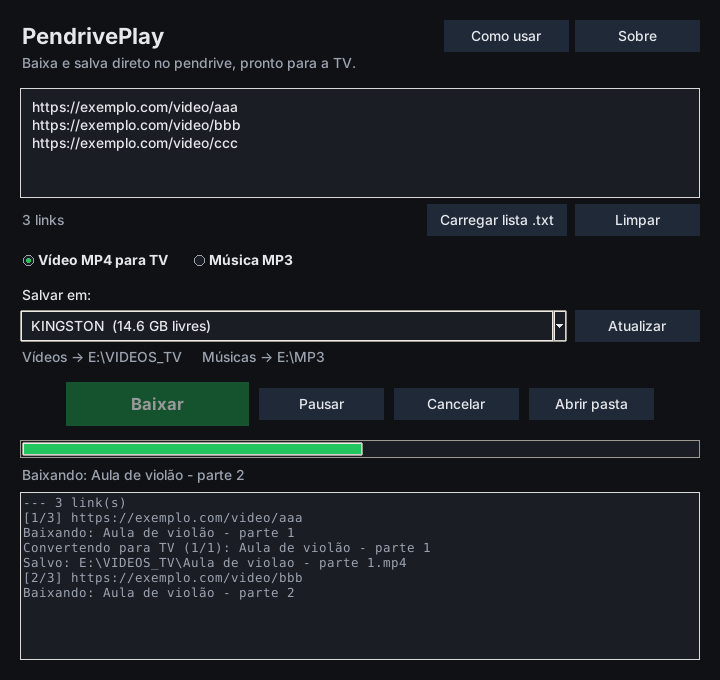

Transforme sua TV antiga em uma TV multimídia.
Assista seus clipes favoritos e ouça suas músicas preferidas direto do pendrive, sem precisar de internet na TV. Você escolhe o link, e o PendrivePlay baixa e converte tudo no formato que a sua TV lê.
Quero o PendrivePlayVeja funcionando numa barbearia de verdade
Do computador para o pendrive e direto para uma TV comum, sem internet.
Não troque de TV só para assistir seus vídeos
Sem Smart, sem aplicativos
A TV funciona perfeitamente, mas não tem aplicativos de vídeo e música. Trocar por uma Smart custa caro.
Internet fraca ou cara
Assistir vídeo pela internet trava, consome dados e depende do sinal. No pendrive, o vídeo está sempre lá.
"Arquivo não suportado"
Você copia um vídeo para o pendrive e a TV não abre. O formato e o nome do arquivo precisam estar certos.
A mesma TV, uma nova vida
Antes
- Só os canais de sempre
- Vídeo do pendrive que a TV não abre
- Clipes e músicas só no celular
Com o PendrivePlay
- Seus clipes favoritos na tela grande
- Músicas tocando pela TV ou pelo som
- Sem internet, sem travar, sem mensalidade
Do computador para a TV em 3 passos
Você prepara o pendrive no computador uma vez e assiste na TV quantas vezes quiser.

Escolha seus clipes e músicas
No computador, cole o link de cada vídeo ou música que você quer. Pode ser um ou vários de uma vez.

O PendrivePlay prepara tudo
Ele baixa, converte para o formato que a TV lê e salva direto no pendrive, organizado em pastas.

Plugue na TV e assista
Coloque o pendrive na entrada USB da TV e assista, sem internet. Também funciona no som e no carro.
Feito para quem quer praticidade
Formato que a TV lê
Vídeo em HD (720p) no padrão mais aceito por TVs com USB, inclusive modelos antigos e TV Box.
Suas músicas em MP3
Só o áudio, com boa qualidade, numa pasta separada. Para ouvir na TV, no som ou no carro.
Vários de uma vez
Monte a sua seleção de clipes e músicas de uma vez só. O programa baixa um por um, sozinho.
Nomes que a TV lê
Salva com nomes curtos, sem acentos e sem símbolos, para a TV listar todos os arquivos.
Pausar e cancelar
Pause e continue de onde parou. Cancelou? O que já terminou continua no pendrive.
Instalação simples
Não pede senha de administrador e já vem com tudo o que precisa. Inclui guia em PDF.
É para você?
Sim, se você…
- tem uma TV sem Smart, mas com entrada USB
- quer assistir clipes e ouvir músicas sem depender de internet na TV
- quer levar músicas para o som ou para o carro pelo pendrive
- quer algo simples, sem complicação
Não, se você…
- tem TV sem entrada USB e nenhum aparelho com USB ligado nela (como TV Box ou DVD)
- não tem computador com Windows 10 ou 11 (o programa roda no computador)
- precisa de vídeo em 4K ou Full HD (ele gera 720p, para funcionar em mais TVs)
- quer baixar conteúdo pago, privado ou protegido (ele não faz isso)
Dê vida nova à sua TV hoje
- PendrivePlay para Windows 10 e 11 (você instala no computador)
- Guia de instalação e uso em PDF, com imagens
- Atualizações gratuitas quando os sites mudarem
- Suporte por mensagem
- Garantia incondicional de 7 dias
Risco zero para você
Instale, prepare o seu pendrive e teste na sua TV. Se não gostar, por qualquer motivo, peça o reembolso em até 7 dias e você recebe 100% do valor de volta, sem perguntas.
Perguntas frequentes
Minha TV precisa ser Smart?
Não. Ela só precisa ter uma entrada USB que toque vídeos e músicas, como a maioria das TVs LCD e LED dos últimos anos. Procure "USB" na lateral ou atrás da TV, e "Mídia" ou "USB" no controle remoto.
Preciso de internet para assistir?
Na TV, não: tudo toca direto do pendrive. Você só precisa de internet no computador, na hora de baixar os vídeos e as músicas.
Minha TV é de tubo e não tem USB. Funciona?
Sozinha, não. Mas funciona se você ligar nela um aparelho com entrada USB, como um TV Box ou um DVD com USB.
Como eu recebo o programa?
Logo depois da confirmação do pagamento, você recebe por e-mail o acesso ao instalador e ao guia em PDF. No PIX, a confirmação costuma ser em poucos minutos.
Que links eu posso usar?
Links de vídeos e músicas de muitos sites. O programa usa o yt-dlp, uma ferramenta de código aberto compatível com centenas de sites. Você escolhe o link, e ele baixa e converte.
O que eu preciso para usar?
Um computador com Windows 10 ou 11 (64 bits) e internet para baixar, um pendrive (quase todo pendrive já vem pronto para TV) e uma TV ou aparelho com entrada USB.
O Windows mostrou "O Windows protegeu o computador". É vírus?
Não. O aviso aparece porque o instalador não tem uma assinatura digital paga. Clique em "Mais informações" e depois em "Executar assim mesmo". O passo a passo está no guia.
E se o antivírus bloquear?
Programas feitos em Python e sem assinatura paga às vezes são marcados por engano. O código é aberto, e qualquer pessoa pode conferir no GitHub.
Um dia parou de baixar. E agora?
Os sites mudam com frequência. Quando isso acontecer, uma versão nova será disponibilizada sem custo para quem já comprou.
Tem mensalidade?
Não. É pagamento único: você paga uma vez e usa o programa para sempre.
E se eu não gostar?
Você tem 7 dias de garantia incondicional. Peça o reembolso pela própria plataforma de pagamento e recebe 100% do valor de volta.
Sua TV antiga, agora multimídia.
Seus clipes e músicas favoritos na tela grande, direto do pendrive e sem internet.
Quero por R$ 19,90